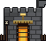
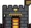
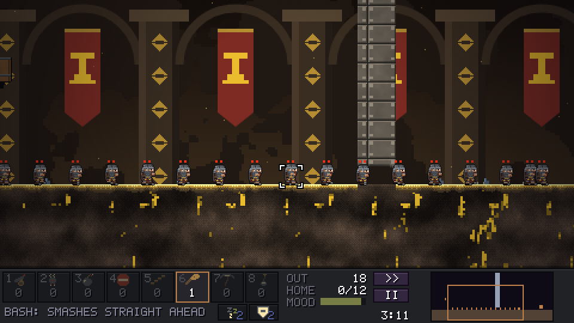
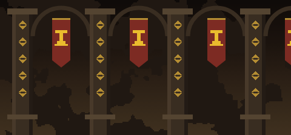

From the journals of the wandering scholar
Of the Dwarves
Home: Deep hallsLed by: The ThaneSubstance: AleClans: Ironbrow and Deepdelver
A Dwarven promise is worth more than most coin, and costs the Dwarf more than most coin to keep.
The hold was small, cut into the mountain, its gate marked in their own angular script. The Dwarves are not one people so much as many small ones who agree on how a hinge ought to be made. This Thane had inherited his hall and was still, at his age, expected to prove he deserved it.
He showed me the forge, where they set magic into iron the way others set a stone in a ring, and said the method was a gift of the old gods. Several tools on that wall are older than his clan’s account of those gods. One of the two is mistaken. I did not say which.
Raiders had come for the finished work twice in his lifetime. He told me so while refilling my ale, which I had not finished, which I gathered was a matter of honour. I finished it.
Dwarves are more organised than most races, with broadly similar traditions across clans, but they are not one united people.
Leadership combines lineage with earned reputation, so a leader must also prove their worth. They are known for keeping their word, even to their own cost.
Most live in small, isolated settlements, usually underground. They build magic straight into weapons, armour and tools, which makes their workshops targets for raids.
They are the most advanced engineers in the world, and their mini-zeppelins carry trade and, sometimes, war.
Not yet settled: how the airships get in and out of underground halls, and what colour the crystal machinery glows.
As observed in Marching Orders
| In short | Grumpy tunnellers |
|---|---|
| Good at | 2 hearts, drill through iron |
| Bad at | Slow, morale runs on ale |
| Own skills | Steam pack (blasts straight up), Cannon (fires troops across the map) |
| Clans | Ironbrow: +1 cannon if map has it; Deepdelver: ale lasts 25% longer |


site/img/journal/race-dwarf-study.webpThree of their marks copied. I cannot read any of them.
An airship passed overhead at noon. Nobody looked up but me.


site/img/journal/race-dwarf-home.webp